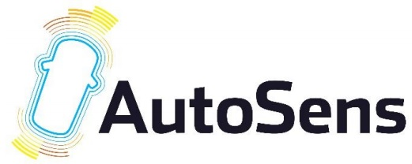

I am a PhD student and research assistant in the Camera Culture Group at the MIT Media Lab, working under the supervision of Prof. Ramesh Raskar.
My research interests are computational imaging, compressive imaging, computer vision and machine learning.
Link to my talk.
Link to my  talk.
Link to my Master's thesis on Imaging Through Scattering.